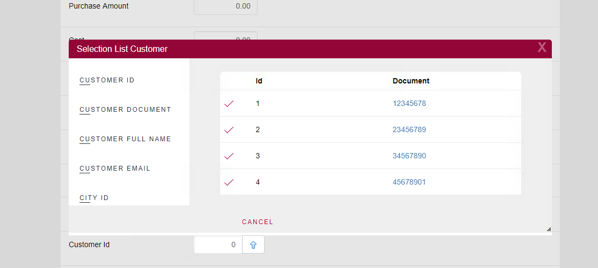
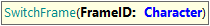

Frames add some challenges in UI automation since locating an element to interact is always relative to each HTML frame. This means that every time you need to interact with elements on different frames, you will need to set the context in your UI test using the SwitchFrame command.
For example, when using Selection Lists or some Prompt Rules in web panels, a typical frame is drawn on top of the original window like here:

To interact on top of that frame, you need to use the SwitchFrame function.
The function receives a FrameId that needs to be using the following format:
index=N // where N is the index starting at zero (0)
or
relative=parent // to navigate to "parent" frame
or
relative=top // to navigate to "top" frame
Remember that you can always record the commands using GXtest Recorder, who will automatically add the SwitchFrame commands needed to interact.

Sets a frame to work with
Parameters:
Example of use:
&driver.SwitchFrame("index=0")
&driver.SwitchFrame("relative=top")
| Backlinks |
| GXtest UI Test for Web - Supported Commands |
| Toc:GXtest v4 |